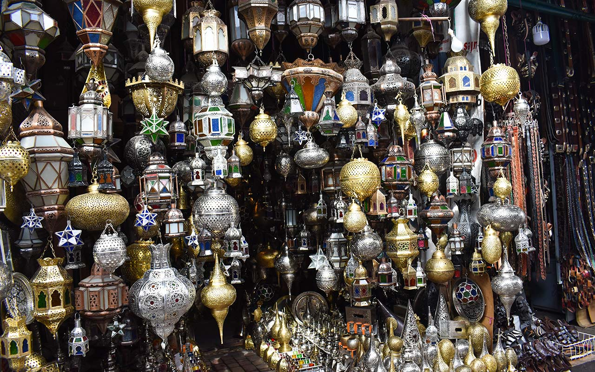
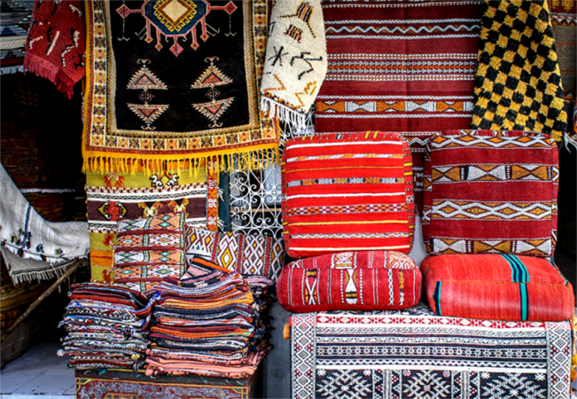

Title
Engraving on copper is one of the most prominent oriental arts, and it is a craft considered part of Islamic art, which is one of the most wonderful arts known to mankind.

Title
Pottery is one of the ancient and ancient industries that Morocco has been known for since time immemorial, as a result of the fact that man knew how to turn clay into a solid substance by grilling in fire in kilns (kilns) and knew how to shape it, make it and glaze it.

Title
The carpet is rectangular and decorated with beautiful shapes, in which Moroccan women are particularly creative